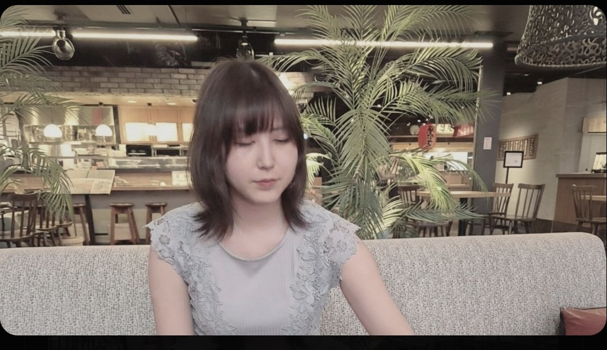
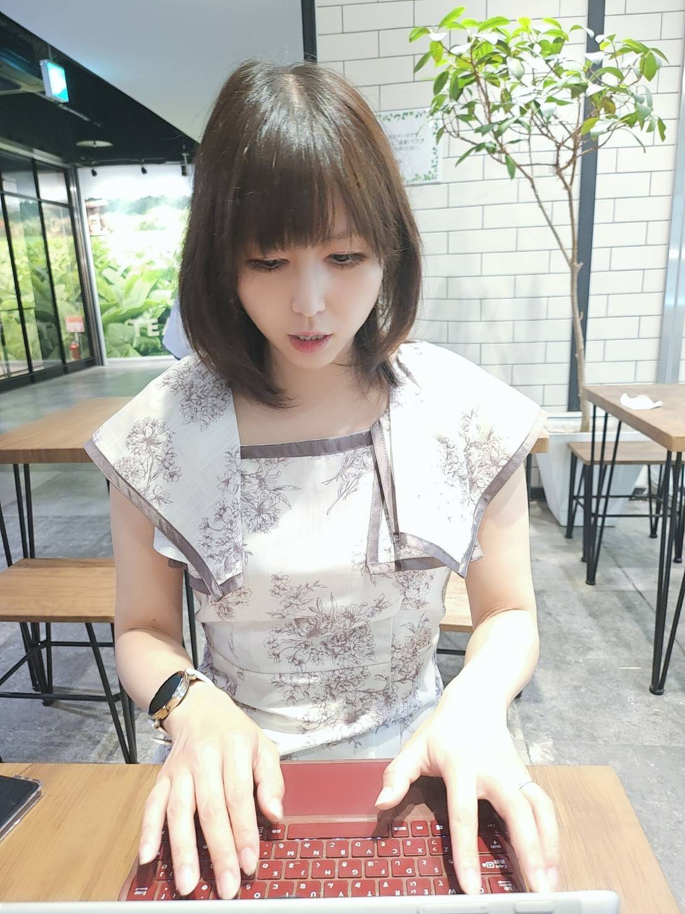
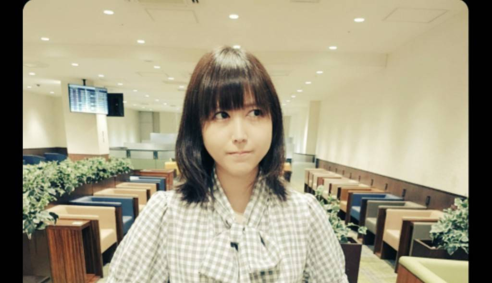

5年越しの出版に込められた想い
〜『私には帰る“場所”がない』制作秘話〜（前編）
デザインエッグ社から2026年秋に出版される『私には帰る"場所"がない』。その5年にわたる執筆期間、文体の変化、そして現代社会への問いを、著者・優さんに聞いた。
このインタビューについて
本稿は、デビュー作『私には帰る"場所"がない』の出版を控える著者・優さんへの独占インタビューです。5年間の執筆プロセス、言語化の意味、タイトルに込められた想い、そして10年の歩みを振り返ります。
5年という「空白」の真相
まずは、この5年と言う長く途方もない時間を24時間体制で支えてくださった全てのご関係者の皆様へ、心より、心より御礼申し上げます。途中で再起不能かと覚悟した休養も挟んだため「いよいよこれはもう駄目か。やっとここまで来たのに。」と涙ながらに絶望的な深淵に立ったこともしばしばありました。いまでこそ元気いっぱいに活動していますが、いちばん落ち込んでいたときはそれは、実存そのものが消え入りそうな境地にまで来ていました。そのなかで、這うようにして執筆した原稿もあります。いま読み返すと、とても痛々しいです。この5年の中で私の考えや思想が左から右へ180度変わりました。それはもう見事なまでの転回です。これは、青臭い子どもから緑のような調和を大切にする大人への変容とも換言することができます。昔はとにかく前のめりに人と話す、議論する、執筆する、何か訴えかけるといった「勇気（パレーシア）」が自分の中に宿っていたんですけれども、だからこそ、危なっかしく、遮二無二で向こう見ずだったところがあって。そういった部分が徐々にソリッドに削ぎ落とされて、余計なことを言わないとか、感情が昂っても一拍置くとか、そういった引き算が人間的な成長とともに取捨選択ができるようになっていきました。それは書けること、書けないこと、そういったところの二つの総括した答えになるかと思います。つまり、私の受けた傷と言うのは、ある種のカウンターだったわけです。「お前は大人しくしろ」と。「いい加減大人になりなさい。」といった荒治療だったように今では懐かしめるのですね。そこで、無駄に理由もなく反抗していた自分がなんだか凄く忌々しく思えて。「皆んなで一丸となってひとつの目標に向かって労力を注いでいるのに、それを蒸発させるようなことばかりして、一体私は何なんだろう。」と、活動再開を経て嘆息とともに考えが180度変わり、全体の利益をいちばんに行動するのが自分の役割であり、使命でありそうしたプレゼンスの使い方が正しいのではないか、そう思うようになってから筆致のベクトルが明らかに変わり、一皮剥けました。

核心：「書く」という行為の本質
世の中には、思っていることがあっても胸にしまっておく人もいれば、喋って発散する人もいます。その中で、あえて『言語化する』という、時に痛みを伴う作業に優さんが駆り立てられるのはなぜなのか。優さんにとって、頭の中で爆発するようなインスピレーションを言葉に落とし込む（言語化する）ということは、何か必然性がある行為に思えます。その点優さんはどのように思われますか？ そして、そうやって命を削るようにして書くことで、優さん自身は一体何を得ているのだと思いますか？
まずは、この5年の間に自分が書く意味それ自体が変容していきました。最初の頃は、セラピーや芸術療法のような形で言語化し、自分の中に抱え込んだ不条理やフラストレーションを昇華させ供養させていく目的がありました。自分が溜めて溜めて溜め込み切ってきたこと、当事者性を持ってどうしても伝えたいこと、理解してほしいこと、そして絶対に誤解されたくないことを、どうにかして表現したかったのです。それが命を削るような執着や執念となり、どこか鬼気迫るものとして肉迫して文章に表れていたのだと思います。一方で最近は、そうした肩肘張った一生懸命さが和らぎ、どこか余白が生まれてきました。そのうえで、以前抱いていた当事者性を代弁するような感覚で書いています。人間である以上、誰もがあらゆる当事者性から逃れることはできませんし、原理的に「非当事者」など存在しないと考えています。そうした様々な当事者同士を結びつけるハブとなり、架橋していく——今ではそのような役割を担うための使命感を持って、筆を取っています。
そもそも、私には言語化に痛みが伴うことはありませんでした。というのも、痛みが伴うということは、目を背けていた自分に向き合い生きたまま解剖するということ。それらを日常的にしていなければ、確かに辛いのかも知れません。でも、私の場合は小さい頃から孤独と共存したまま、絶えず自分と対話をしていました。時には自分で自分を殴り倒すような対峙の仕方をしてきました。だからこそ、そうした腸の中にどろどろした濾過される前の泥濘を飼いながら、全くもってお腹がすっきりしているような顔をして生きてきたので、ある意味言語化は私にとり「嘔吐」のような排泄行為だったんですよね。生きているだけで、吐き気がするほどの不条理で圧し潰されそうだったのです。

『帰る場所がない』というタイトルの真意
この作品を通じて、優さんが今の世の中に一番伝えたかったこと、もっと言えば今の社会に対して『一石を投じたかった問い』とは何なのでしょうか。読んだ人のどんな感情を揺さぶりたいと思って、この本を世に送り出したのか、その覚悟を教えてください。
（この部分の詳細回答は提供テキストに含まれていません。必要に応じて追加してください。）
この『帰る場所』という言葉には、物理的な家や故郷という意味合いだけでなく、精神的な拠り所や、ありのままの自分でいられる関係性など、様々な捉え方があると私は思うんですね。優さんが本作のタイトルで表現したかった『帰る場所』とは、どのようなものを指しているのでしょうか？
文字通り、私には帰る場所がありません。それは実家がないといった物理的な意味です。これは、一見幸福で豊かにみえる位相にも埋めようのない原初的な欠損があるということで、まず読む方々になにか励みになればよいとの想いがありました。生きるなかで何がしかの喪失体験からは避けられ得ず、そして往々にして人はその喪のプロセスを辿り、生涯をかけて昇華してゆきます。そうした心の整理になるような言葉を紡ぎたかったのと、単なる武勇伝のような成功譚で終わらせたくなかったのです。そして、読者もそれは恐らく望んでいません。それは人の不幸を愉しむシャーデンフロイデの意味合いではなく、生存バイアスに過ぎないからです。つまり再現性がない。再現性がないということは、端的に読者に役立つような話にはなりません。やはりこの不景気なご時世でお金を払ってわざわざ私の書籍を手に取って購入しようと決めてくださる以上は、確かな読了感を与えられるような筆致を連ねたいと感じました。そうした私の思想の根幹ともいえるなにか相対主義的なもの・・・AもBも両立する、つまり「ない」と「ある」が並行しそれぞれが内包されるような、そうした一枚岩ではない複雑な現代へ向けて、タイトルをつけました。「ない」と断言することで逆説的に浮き出る「ある」ほうへと、目を向けてもらいたかったのです。

変化と普遍：10年の歩みを振り返る
（この部分は提供テキストに詳細な回答がなかったため、必要に応じて追加してください。現状は省略しています。）

社会への問い：現代が抱える「帰る場所」の喪失
本書が提示する『帰る場所がない』という状態は、実は現代の多くの人が無意識のうちに体験している、ある種の『普遍的な喪失感』ではないでしょうか？
「現代では、全体的に内向的になり、個人主義がきわまっていると感じています。そうした意味で、誰しもが疎外感を感じながらも、その「疎」に対して安心感を抱いている。
これは、地域社会から核家族化し、経済の衰退とともに一人っ子が増え、兄弟間あるいは地域間で社会を学ぶ、といった戯れがなくなったからだと思います。そうした道程を辿っても私には帰る場所がないということが、必ずしもネガティヴだとは考えません。
むしろ、「帰る場所がない」のではなく翻って「どこへでもゆける」点できわめて自由で幅広い可動域を確保できているのです。「帰る場所」があることは、取りも直さず「責任」や「縛られる」窮屈さも内包します。
固定の場所を伴った安全には維持管理義務が発生する。そうした意味合いでも、果たして実際に「ある」ことは必ずしもポジティブなだけなのだろうか？という問いかけでもあります。何事も両極があり、絶えずその二軸を反復しながら葛藤とともに生きているのが通常であり、むしろそれを「矛盾」や「二律背反」として非難するほうが原理に逆らっている。
私が相対主義こそ人間の在り様であり、橋渡し役になると確信している所以です。」
終わりに
今回のインタビューを通して見えてきたのは、ひとりの人間が「書くこと」の本質的な意味を深め、変容させてきた軌跡です。
かつての執筆は、自身の中に渦巻く不条理や過酷な感情を「嘔吐」のように吐き出し、供養するための切実な排泄行為でした。幼少期から孤独と対峙し、絶えず自己解剖を繰り返してきた背景があるからこそ、その言葉は命を削るような執着と重みを伴って表現されてきました。
しかし、時を経て生まれた心の余白は、その表現を「個の救済」から「他者との架橋」へと昇華させました。
現代社会において、個人主義の深化や「帰る場所の不在」は一見すると孤立のように映ります。しかしそれは翻って、「どこへでもゆける自由」と「しなやかな可動域」を手に入れた姿でもあります。誰もが何らかの当事者であり、原理的に「非当事者」が存在しない世界だからこそ、互いの孤立や葛藤を肯定し、結びつける存在が必要とされています。
二律背反する感情や状況を安易に否定せず、その狭間で葛藤しながら生きること——それこそが人間のリアルな在り様です。
かつて生傷を抱えながら言葉を紡いでいた表現者は今、様々な当事者性を包み込み、相反する世界同士を繋ぎ合わせる「ハブ（橋渡し役）」としての確かな使命感を携えて、新たな言葉を刻み続けています。